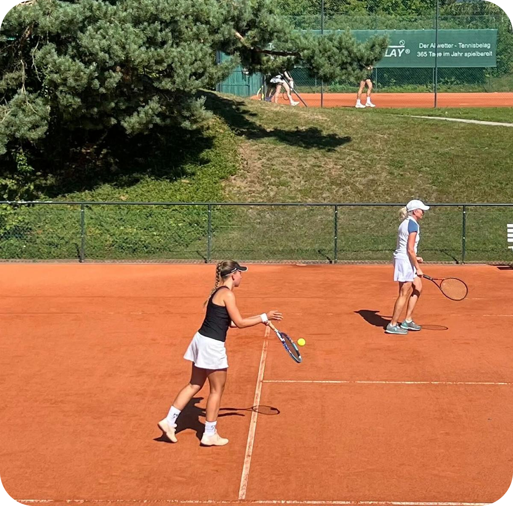

ABOUT ME
Die Person hinter dem Racket.

HI, ICH BIN SIRI.
Mit 10 Jahren habe ich angefangen, Tennis zu spielen. Mit 14 habe ich mich entschieden, in den Interclub einzusteigen und aktiv Matches zu spielen.
VON DER U15 B-LIGA BIS IN DIE 2. LIGA DER DAMEN
Bis Anfang dieses Jahres konnte ich meinem Hobby zwei- bis dreimal die Woche nachgehen. Wegen des Studiums musste ich das aufgeben. Diese Website hält fest, was ich am Tennis liebe.
MEIN RACKET
Ich spiele einen Head-Schläger. Für mich ist er perfekt, weil er leicht ist und mich meine Schläge mit Perfektion ausführen lässt. Als Linkshänderin werden meine Schläge dadurch unschlagbar. Er unterstützt mich beim Spielen, statt mich zu bremsen.
MODELL
INSTINCT
GEWICHT
300 G
RAHMENGRÖSSE
645 CM²
AUF DEM PLATZ
Egal, wie viele Jahre schon vergangen sind: Sobald ich den Platz betrete, ist sie wieder da – diese kleine, vertraute Nervosität. Das Herz schlägt einen Takt schneller, der Adrenalinspiegel steigt. Für mich ist das kein Zeichen von Unsicherheit, sondern der Beweis, dass die Leidenschaft für das Spiel niemals verblasst.

LIEBLINGSSCHLAG
BACKHAND
LIEBLINGSBELAG
SAND
LIEBLINGSTURNIER
WIMBLEDON
LUST AUF EIN MATCH ODER EINE FRAGE?
CONTACT ME